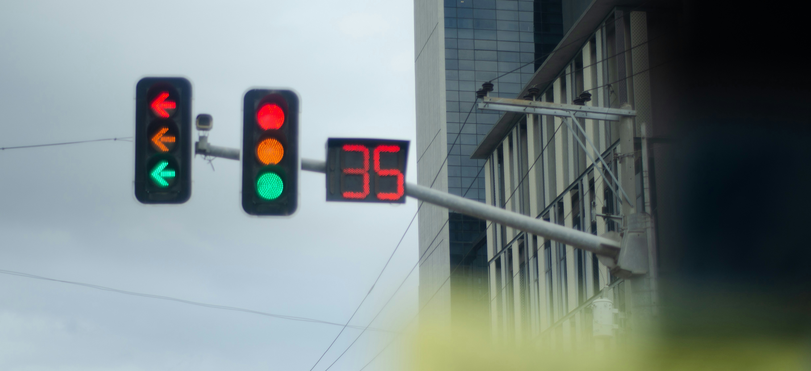
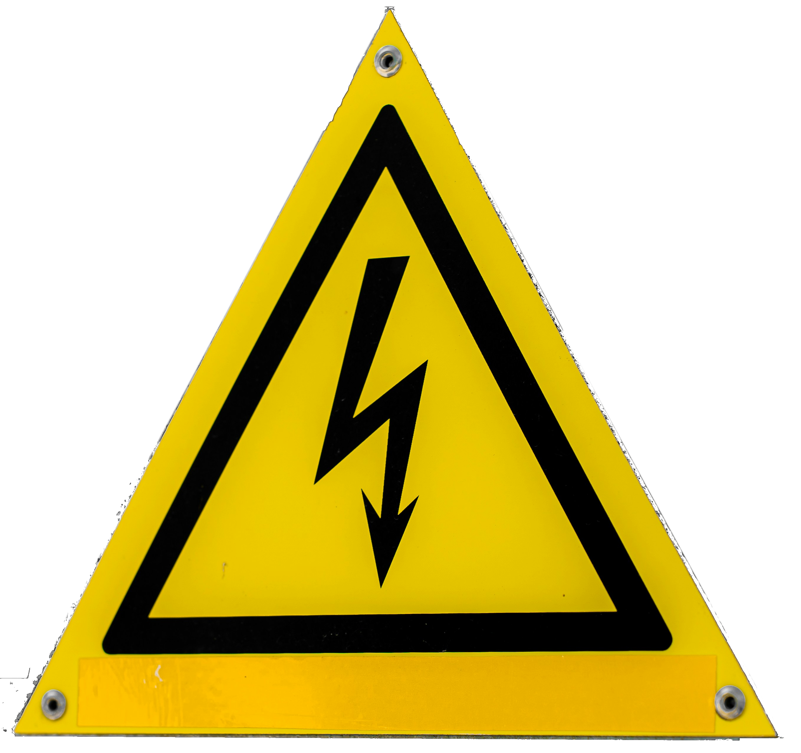

Sample text
Color Blindness Filter Examples
Color Swatches
Red
Green
Blue
Yellow
Cyan
Magenta
Black
White
Gray
Images

Credits: Secret Travel Guide sur Unsplash
Credits: Noah Dominic sur Unsplash

Credits: Robert Katzki sur Unsplash

Credits: 8-leaf clover - Own work, CC0, Link
Text
This is red text.
This is green text.
This is blue text.
Red Link Green Link Blue LinkIcons and Symbols

Credits: Aleksandr Kadykov sur Unsplash
Credits: Anastasiya Badun sur Unsplash